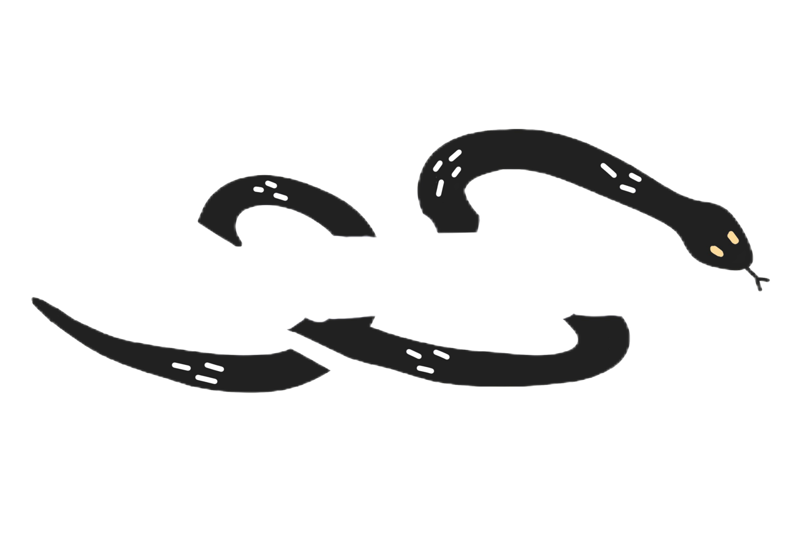
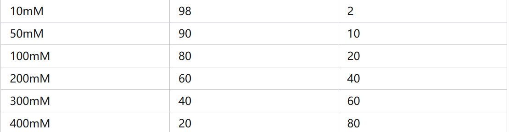

Loading...

Protocal
E. Coli Strain selection and cell culture
E. Coli Strain[i]: KGK10 [A19 ΔendA ΔtonA ΔspeA ΔtnaA metþ ΔsdaA ΔsdaB ΔgshA Δgor TrxB_HAtag; (Knapp et al., 2007)]. The use of KGK10 strain can reduce the demand of iodoacetamide (IAM, see in the part of Cell-free protein synthesis) and make the disulfide isomerase DsbC, which is important for the formation of disulfide bond structure, less inactivated.
Cell culture[ii]: Culture E. coli using the medium listed below(Zawada J et al, 2005).
Table 1 Medium for E. Coli Culture[6]
Table 1 Medium for E. Coli Culture[6]
| Component | g/L (Before Sterilization) |
|---|---|
| (NH4)2SO4 | 1.5 |
| NaH2PO4•H2O | 3.5 |
| KCl | 2 |
| Trisodium citrate dihydrate | 0.5 |
| After Sterilization Add | mg/L |
|---|---|
| Choline chloride | 28.6 |
| Niacin | 25.1 |
| p-Aminobenzoic acid (potassium salt) | 25.6 |
| Pantothenic acid (hemi-calcium salt) | 9.4 |
| Pyridoxine hydrochloride | 1.5 |
| Riboflavin | 3.9 |
| Thiamine hydrochloride | 17.7 |
| Biotin | 0.1 |
| Cyanocobalamin | 0.01 |
| Folic acid | ... |
The amino acid feed was pH adjusted to 11 –11.5 with potassium hydroxide. At lower pH values, the mixture is not soluble. The initial mineral salt mixture and the glucose feed were autoclaved (separately); all other medium components were filter sterilized. Adding all the required magnesium sulfate to the initial batch medium resulted in precipitation. Therefore, the magnesium sulfate was mixed with the glucose feed so that it would be added gradually during the fermentation[6].
For the inoculum, a 1-mL stock culture frozen in 20% (v/v) glycerol was thawed at room temperature and was used to inoculate 100 mL of defined medium (see Table I). A new tube of stock culture was used for each fermentation. After overnight growth at 37℃, 20 mL was transferred to 400 mL of fresh media[6].
Preparation of E. coli lysate[3]
The cultured cells were monitored by spectrophotometry until OD600 reached at 3.0. Then the cells were harvested in the middle of exponential growth phase by centrifuging at 5000 RCF at 4°C for 15 min and were washed three times with cold Buffer A. Buffer A contained 10 mM Tris-acetate (pH 8.2), 14 mM magnesium acetate, 60 mM potassium glutamate and 2 mM dithiothreitol. After final wash and centrifugation, the pelleted wet cells were weighed, flash frozen in liquid nitrogen and stored at −80℃.
The thawed cells were suspended in 1 mL of Buffer A per 1 g of wet cell mass.In order to remove cell debris and insoluble components in the cell lysate, the lysate was centrifuged twice at 30,000 RCF at 4°C for 30 min. The supernatant was then incubated at 37°C for 60 min with gentle shaking (250 rpm) and centrifuged at 15,000 RCF at 4°C for 15 min.
Thawed and suspended cells were transferred into 1.5 mL microtube and placed in an ice-water bath. The cells were lysed using a Q125 Sonicator (Qsonica, Newtown, CT) with 3.175 mm diameter probe at frequency of 20 kHz and 50% of amplitude. The input energy was monitored and recorded during sonication( The ultrasound energy of 556 joules is optimal for 1.5ml cell suspension). The lysate was then centrifuged once at 12,000 RCF at 4°C for 10 min. The run-off reaction (37°C at 250 rpm) and second centrifugation (10,000 RCF at 4°C for 10 min) were performed. All of prepared cell extract was flash frozen in liquid nitrogen and stored at −80°C until use.
Cell-free protein synthesis
The CFPS reactions were carried out in a 1.5 mL microtube in the incubator. The standard reaction mixture for CFPS consists of the following components in a final volume of 15 μL[3]:
Table 2 mixture for CFPS[3](Adapted from Kwon YC,2015)
| Component | Concentration |
|---|---|
| ATP | 1.2 mM |
| GTP, UTP, CTP | 0.85 mM each |
| L-5-formyl-5,6,7,8-tetrahydrofolic acid (folinic acid) | 34.0 μg/mL |
| E. coli tRNA mixture | 170.0 μg/mL |
| Potassium glutamate | 130 mM |
| Ammonium glutamate | 10 mM |
| Magnesium glutamate | 12 mM |
| 20 amino acids | 2 mM each |
| L-[14C(U)]-leucine | 10 μM |
| Nicotinamide adenine dinucleotide (NAD) | 0.33 mM |
| Coenzyme-A (CoA) | 0.27 mM |
| Spermidine | 1.5 mM |
| Putrescine | 1 mM |
| Sodium oxalate | 4 mM |
| Phosphoenolpyruvate (PEP) | 33 mM |
| Plasmid | 13.3 μg/mL |
| T7 RNA polymerase | 100 μg/mL |
| Cell extract | 27% v/v |
| iodoacetamide (IAM) | 50 μM |
| disulfide isomerase DsbC | 10 μM |
| GSSG (Oxidized Glutathione Disulfide) | 4 mM |
| GSH (Reduced Glutathione) | 1 mM |
To promote the correct folding of disulfide bonds and control the REDOX potential, we added the last four additions in the table above. GSSG and GSH were used to artificially adjust the REDOX potential of the culture system. IAM is used to inactivate the bacteria's own glutathione reductase(Gor)[5]. Since IAM also reacts with G-3PDH, a glycolytic enzyme containing cysteine residues, glucose cannot be used as an energy source in this cell-free protein synthesis. Instead, we use PEP as an energy substance.
The CFPS reactions were carried out in a microplate or 1.5ml centrifuge tube at 37°C for 4~6 hours.
Isolation and purification of AbTac[4]
AbTac was purified from the cell-free reaction via a three column procedure. After dilution with 0.5 volumes of PBS, clarification via centrifugation and filtration on a 1.2μM PES membrane, the material was loaded onto a Protein A HP (GE Healthcare Life Sciences, Piscataway, NJ) column with 5 min residence time. Elution was performed using a step to 0.1 M glycine-HCl, pH 3.0, followed by immediate neutralization with 0.15 mL of 1 M TRIS-HCl, pH 8.5 per 1 mL of eluate. Removal of soluble aggregates from the Protein A HP pool was accomplished by HIC chromatography on Phenyl (high sub) Sepharose FF (GE Healthcare Life Sciences, Piscataway, NJ), after adjustment of the pooled material to a concentration of 0.75 M (NH4)2SO4. Precipitates formed upon (NH4)2SO4 addition were removed by centrifugation. HIC chromatography was performed in 50 mM NaH2PO4-NaOH, pH 7.3 with a linear gradient from 0.75 M to 0 M (NH4)2SO4. 此处删去Trastuzumab改成AbTac eluted from the column was pooled and subsequently concentrated 36-fold on a 10 kD ultrafilter for injection on a Superdex 200 10/300 GL (GE Healthcare Life Sciences, Piscataway, NJ) size exclusion column. As the final purification step SEC was performed in 50 mM L-histidine, 300 mM NaCl, 4% (w/v) trehalose dehydrate, pH 6.0. The correct intact mass of AbTac was confirmed by mass spec analysis.
Cell-free protein synthesis
The CFPS reactions were carried out in a 1.5 mL microtube in the incubator. The standard reaction mixture for CFPS consists of the following components in a final volume of 15 μL[3]:
Table 2 mixture for CFPS[3](Adapted from Kwon YC,2015)
| Component | Concentration |
|---|---|
| ATP | 1.2 mM |
| GTP, UTP, CTP | 0.85 mM each |
| L-5-formyl-5,6,7,8-tetrahydrofolic acid (folinic acid) | 34.0 μg/mL |
| E. coli tRNA mixture | 170.0 μg/mL |
| Potassium glutamate | 130 mM |
| Ammonium glutamate | 10 mM |
| Magnesium glutamate | 12 mM |
| 20 amino acids | 2 mM each |
| L-[14C(U)]-leucine | 10 μM |
| Nicotinamide adenine dinucleotide (NAD) | 0.33 mM |
| Coenzyme-A (CoA) | 0.27 mM |
| Spermidine | 1.5 mM |
| Putrescine | 1 mM |
| Sodium oxalate | 4 mM |
| Phosphoenolpyruvate (PEP) | 33 mM |
| Plasmid | 13.3 μg/mL |
| T7 RNA polymerase | 100 μg/mL |
| Cell extract | 27% v/v |
| iodoacetamide (IAM) | 50 μM |
| disulfide isomerase DsbC | 10 μM |
| GSSG (Oxidized Glutathione Disulfide) | 4 mM |
| GSH (Reduced Glutathione) | 1 mM |
To promote the correct folding of disulfide bonds and control the REDOX potential, we added the last four additions in the table above. GSSG and GSH were used to artificially adjust the REDOX potential of the culture system. IAM is used to inactivate the bacteria's own glutathione reductase(Gor)[5]. Since IAM also reacts with G-3PDH, a glycolytic enzyme containing cysteine residues, glucose cannot be used as an energy source in this cell-free protein synthesis. Instead, we use PEP as an energy substance.
The CFPS reactions were carried out in a microplate or 1.5ml centrifuge tube at 37°C for 4~6 hours.
Isolation and purification of AbTac[4]
AbTac was purified from the cell-free reaction via a three column procedure. After dilution with 0.5 volumes of PBS, clarification via centrifugation and filtration on a 1.2μM PES membrane, the material was loaded onto a Protein A HP (GE Healthcare Life Sciences, Piscataway, NJ) column with 5 min residence time. Elution was performed using a step to 0.1 M glycine-HCl, pH 3.0, followed by immediate neutralization with 0.15 mL of 1 M TRIS-HCl, pH 8.5 per 1 mL of eluate. Removal of soluble aggregates from the Protein A HP pool was accomplished by HIC chromatography on Phenyl (high sub) Sepharose FF (GE Healthcare Life Sciences, Piscataway, NJ), after adjustment of the pooled material to a concentration of 0.75 M (NH4)2SO4. Precipitates formed upon (NH4)2SO4 addition were removed by centrifugation. HIC chromatography was performed in 50 mM NaH2PO4-NaOH, pH 7.3 with a linear gradient from 0.75 M to 0 M (NH4)2SO4. AbTac eluted from the column was pooled and subsequently concentrated 36-fold on a 10 kD ultrafilter for injection on a Superdex 200 10/300 GL (GE Healthcare Life Sciences, Piscataway, NJ) size exclusion column. As the final purification step SEC was performed in 50 mM L-histidine, 300 mM NaCl, 4% (w/v) trehalose dehydrate, pH 6.0. The correct intact mass of AbTac was confirmed by mass spec analysis.
Detailed operation for Ni-NTA separation of recombinant proteins with His tag:
1. Set up the Ni-NTA column with dimensions of 1.6 cm × 20 cm, and the column bed volume is 10 mL.
2. Balance the column bed with buffer solution 1 for 2 to 5 times the volume, with a flow rate of 2 mL/min.
3. Filter 20 mL of cell disruption solution (50 mM PBS, pH 7.4, 0.5 M NaCl) through a 0.45 µm filter membrane, add sample, and flow at a rate of 1 mL/min.
4. Wash the column bed with buffer solution 1 for 2 to 5 times the volume, with a flow rate of 2 mL/min.
5. Elute the proteins at different concentrations of imidazole (10, 50, 100, 200, 300, 400 mM) in buffer solution 3, with a flow rate of 2 mL/min, collect the elution peaks at each stage, and detect the molecular weight and purity of the fusion protein using SDS-PAGE.
6. Wash the column bed with pure water for 5 times the volume, and then wash with 20% ethanol for 3 times the volume, with a flow rate of 2 mL/min. Place the column in a low-temperature environment for storage.
Composition of several buffer solutions:
Buffer solution 1: 50 mM PBS buffer at pH 7.4. Preparation: 19 mL of 0.5 M NaH2PO4, 81 mL of 0.5 M Na2HPO4, 29.3 g of NaCl, dissolve with an appropriate amount of water and adjust to a final volume of 1000 mL.
Buffer solution 2: 50 mM phosphate buffer at pH 7.4, i.e., pH 7.4 PBS solution. Preparation: 19 mL of 0.5 M NaH2PO4, 81 mL of 0.5 M Na2HPO4, 29.3 g of NaCl and 34 g of imidazole, dissolve with an appropriate amount of water, adjust the pH, and adjust to a final volume of 1000 mL.
Buffer solution 3: Buffer solutions with different imidazole concentrations are prepared as follows:
The contents of the 1st, 2nd and 3rd columns are respectively: concentration of imidazole, volume of buffer solution 1 (mL), volume of buffer solution 2 (mL).
KGF Amino acid sequence:
MHKWILTWILPTLLYRSCFHIICLVGTISLACNDMTPEQMATNVNCSSPERHTRSYDYMEGGDIRVRRLFCRTQWYLRIDKRGKVKGTQEMKNNYNIMEIRTVAVGIVAIKGVESEFYLAMNKEGKLYAKKECNEDCNFKELILENHYNTYASAKWTHNGGEMFVALNQKGIPVRGKKTKKEQKTAHFLPMAIT
SB sequence: RKRLQVQLSIRT
The actual sequence added in the experiment: ——AGSGGS RKRLQVQLSIRT (The nucleotide sequence was prepared based on the codon preference of E. coli)
KGF-SB amino acid sequence:
MHKWILTWILPTLLYRSCFHIICLVGTISLACNDMTPEQMATNVNCSSPERHTRSYDYMEGGDIRVRRLFCRTQWYLRIDKRGKVKGTQEMKNNYNIMEIRTVAVGIVAIKGVESEFYLAMNKEGKLYAKKECNEDCNFKELILENHYNTYASAKWTHNGGEMFVALNQKGIPVRGKKTKKEQKTAHFLPMAIT——AGSGGS RKRLQVQLSIRT
I.Human Embryo Lung Fibroblast Cell Culture
① Human embryonic lung fibroblasts were cultured in 12-well plates from a cell bank.
② Culture was performed in DMEM medium containing 10% heat-inactivated fetal bovine serum (FBS), 100 u/mL penicillin, and 100 μg/mL streptomycin in a humidified environment at 37°C, 5% CO2, and 95% air.
③ After 6 days of differentiation, human embryonic lung fibroblasts grew in monolayers until they reached a fusion degree of 70-80%.
mRNA Extraction
RNA Extraction - Trizol Method
① Grind the tissue into powder in liquid N, then add 1 mL Trizol solution to 50-100 mg tissue. The total volume of the sample should not exceed 10% of the volume of Trizol used.
② The slurry was left at room temperature for 5 minutes, then chloroform was added at a rate of 0.2 mL per 1 mL of Trizol solution. The centrifuge tube was tightly closed, and the centrifuge tube was vigorously shaken by hand for 15 seconds.
③ In a new centrifuge tube, add 0.5 mL of isopropanol to each mL of Trizol solution. Let stand at room temperature for 10 minutes and centrifuge at 12,000g for 10 minutes.
④ The supernatant was discarded, and 75% ethanol was added at a rate of at least 1 mL per mL of Trizol, vortexed, and centrifuged at 7,500g for 5 minutes at 4°C.
⑤ Carefully discard the supernatant and then dry at room temperature or in vacuum for 5-10 minutes, taking care not to over-dry, as this will reduce the solubility of the RNA. The RNA was then dissolved in water, at 55°C-60°C for 10 minutes if necessary. RNA can be isolated for mRNA or stored in 70% ethanol at -70°C.
mRNA Extraction
Because the mRNA contains poly (a) + at the end, when the total RNA flows through oligo (DT) cellulose, the mRNA is specifically adsorbed on the oligo (DT) cellulose column under the action of high salt buffer, and the mRNA can be washed down in low salt concentration or distilled water, after twice oligo (dT) cellulose columns, relatively pure mRNA was obtained.
① Suspend 0.5 - 1.0 g of oligo(dT) cellulose in 0.1 mol/L NaOH.
② Load the suspension into a sterilized disposable chromatography column or into a Pasteur pipette filled with glass wool treated with DEPC and sterilized under high pressure. The column bed volume should be 0.5 - 1.0 mL. Rinse the column bed with 3 times the column bed volume of sterilized water.
③ Rinse the column bed with 1× column elution buffer until the pH value of the effluent is less than 8.0.
④ After incubating the extracted RNA solution at 65℃ for 5 minutes, quickly cool it to room temperature, add an equal volume of 2× column elution buffer, load the sample, and immediately collect the eluate using a sterilized test tube. When all the RNA solution has entered the column bed, add 1-fold volume of 1× column elution buffer.
⑤ Measure the OD260 of each tube. When the OD in the eluate is 0, add 2-3 times the volume of sterilized elution buffer. Collect the eluate in 1/3 to 1/2 of the column bed volume in each tube.
⑥ Measure the OD260, and combine the eluate fractions containing RNA.
⑦ Add 1/10 volume of 3M NaAc (pH 5.2), 2.5 times the volume of cold ethanol, mix well, and incubate at -20℃ for 30 minutes.
⑧ Centrifuge at 4℃ at 12,000g for 15 minutes, carefully discard the supernatant, wash the precipitate with 70% ethanol, and centrifuge again at 4℃ at 12,000g for 5 minutes.
⑨ Carefully discard the supernatant, air-dry the precipitate for 10 minutes, or vacuum-dry it for 10 minutes.
⑩ Dissolve the RNA solution in a small amount of water and use it for cDNA synthesis (or store it in 70% ethanol at -70℃).
cDNA Synthesis - Riboclone M-MLV(H-) cDNA Synthesis Technology
This system uses M-MLV reverse transcriptase for the first strand synthesis, and the second strand synthesis employs the displacement synthesis method, using RNaseH and DNA polymerase I for displacement synthesis. Finally, T4 DNA polymerase is used to remove the single-stranded ends. This method is simple and feasible. The reagents for this system include:
① Take a sterilized, RNA-free Eppendorf tube, add RNA template and appropriate primers. For each μg of RNA, use 0.5 μg of primer (if using NotⅠ primer junctions, use 0.3 μg), adjust the volume to 15 μL with H2O, incubate at 70°C for 5 minutes, cool to room temperature, and centrifuge to concentrate the solution at the bottom of the tube.
② Then add successively:
5× first strand buffer 5 μL
rRNasin RNA inhibitor 25 U
M-MLV(H-) reverse transcriptase 200 U
H2O to adjust the total volume to 25 μL
③ Gently tap the tube wall with fingers, transfer 5 μL to another Eppendorf tube, add 2-5 μCi [α-32 P] dCTP (>400 Ci/mmol) for the first strand isotope incorporation for radioactivity activity determination.
④ Incubate at 37°C (random primers) or 42°C (other primers) for 1 hour.
⑤ Remove and place on ice.
⑥ Add the determined Eppendorf tube with 95 μL 50 mM EDTA to terminate the reaction and make the total volume 100 μL. Take 90 μL for electrophoresis analysis (first use phenol extraction), and 10 μL for radioactivity activity determination of isotope incorporation.
⑦ The Eppendorf tube for first strand synthesis can be directly used for second strand synthesis.
First Strand Synthesis
Reagents: [α-32 P] dCTP (>400 Ci/mmol), EDTA (50 mM and 200 mM), TE-buffered phenol-chloroform (1:1), 7.5 M NH4Ac, ethanol (100% and 70%), TE buffer.
① Take 20 μL of the reaction solution of the first strand, then add successively: 20 μL of 10× second strand buffer, 23 μL of DNA polymerase I, 0.8 μL of RNase H, and make up to a final volume of 100 μL with H2O.
② Mix gently. If the second strand incorporation radioactivity measurement is required, take 10 μL and transfer it to another Eppendorf tube, and add 2-5 μCi of [α-32 P] dCTP.
③ Incubate at 14°C for 2 hours (if the cDNA is to be synthesized for a length of 3 kb or more, the incubation time should be extended to 3-4 hours).
④ Add 90 μL of 50 mM EDTA to the Eppendorf tube containing the incorporation measurement, take 10 μL for radioactivity measurement of incorporation, and the remaining can be subjected to electrophoresis analysis.
⑤ Centrifuge the reaction tube of the second strand synthesis of cDNA at 70°C for 10 minutes, centrifuge at low speed, and place it on ice.
⑥ Add 2 μL of T4 DNA polymerase, incubate at 37°C for 10 minutes.
⑦ Add 10 μL of 200 mmol/L EDTA to terminate the reaction.
⑧ Extract the cDNA reaction solution with an equal volume of phenol:chloroform, centrifuge for 2 minutes.
⑨ Transfer the aqueous phase to another Eppendorf tube, add 0.5 times the volume of 7.5 M acetate ammonium (or 0.1 times the volume of 1.5 M sodium acetate, pH 5.2), mix well, then add 2.5 times the volume of cold ethanol (-20°C), centrifuge for 5 minutes after -20°C storage for 30 minutes.
⑩ Carefully discard the supernatant, add 0.5 mL of cold 70% ethanol, centrifuge for 2 minutes.
⑪ Carefully remove the supernatant, dry the precipitate.
⑫ Dissolve the precipitate in 10-20 μL of TE buffer.
Amplification of KGF gene and splicing of SB sequence
① Use SOR PCR (gene splicing by overlap extension PCR) to splice the KGF gene and the SB sequence. Four primers:
P1 (5’-GAGCTCATGCACAAATGGATAC-3’)
P2 (5’-GCAATAACTGCGGGCAG-3’)
P3 (5’-CTGCCCGCAGTTATTGC-3’)
P4 (5’-CAAGCTTCGGGTGCG-3’)
② The obtained PCR fragments were digested by T4 DNA polymerase, phosphorylated by T4 polynucleotide ligase, and ligated to the ScaI-digested and phosphorylated pMD18-T Vector using T4 DNA ligase.
③ The obtained recombinant plasmid was mixed with E. coli DH5α cells (1:19) and incubated on ice for 30 minutes, then at 42°C for 2 minutes, followed by adding 2 mL LB, incubation on ice for 2 minutes, and incubation at 37°C for 80 minutes. Then, 40 μL of X-gal and 20 μL of IPTG were added and incubated at 37°C overnight.
④ The transformed cells were spread on LB agar plates for blue-white screening. Positive clones were selected from the transfected E. coli DH5α cells, and blue colonies on the LB agar plates due to the production of indigo were selected as candidate cells carrying the hKGF gene in E. coli DH5α.
⑤ The recombinant plasmid was isolated from E. coli DH5α cells using a plasmid extraction kit. The inserted fragment was digested and sequenced to ensure the correct construct was obtained.
Construction of an Expression Vector
① The amplified recombinant plasmid was digested with endonucleases Eco53kI and HindⅢ.
② The PCR fragments were recovered using the PCR fragment recovery kit according to the manufacturer's instructions.
③ The recovered KGF cDNA was ligated to the digested pBad/His A plasmid with Eco53kI and HindⅢ.
④ Mix 1 μL of pBad/His A, 1 μL of the cDNA fragment and 5 μL of universal buffer at 4°C for overnight incubation.
⑤ The pBad/His A plasmid with the correct KGF gene was simultaneously introduced into Escherichia coli DH5α cells.
⑥ The recombinant plasmid was isolated, digested and sequenced to obtain the correct pBad/His A-KGF construct plasmid.

Purification of Labeling Protein
Detailed operation for Ni-NTA separation of recombinant proteins with His tag:
① Set up the Ni-NTA column with dimensions of 1.6 cm × 20 cm, and the column bed volume is 10 mL.
② Balance the column bed with buffer solution 1 for 2 to 5 times the volume, with a flow rate of 2 mL/min.
③ Filter 20 mL of cell disruption solution (50 mM PBS, pH 7.4, 0.5 M NaCl) through a 0.45 µm filter membrane, add sample, and flow at a rate of 1 mL/min.
④ Wash the column bed with buffer solution 1 for 2 to 5 times the volume, with a flow rate of 2 mL/min.
⑤ Elute the proteins at different concentrations of imidazole (10, 50, 100, 200, 300, 400 mM) in buffer solution 3, with a flow rate of 2 mL/min, collect the elution peaks at each stage, and detect the molecular weight and purity of the fusion protein using SDS-PAGE.
⑥ Wash the column bed with pure water for 5 times the volume, and then wash with 20% ethanol for 3 times the volume, with a flow rate of 2 mL/min. Place the column in a low-temperature environment for storage.
Composition of several buffer solutions:
Buffer solution 1: 50 mM PBS buffer at pH 7.4. Preparation: 19 mL of 0.5 M NaH2PO4, 81 mL of 0.5 M Na2HPO4, 29.3 g of NaCl, dissolve with an appropriate amount of water and adjust to a final volume of 1000 mL.
Buffer solution 2: 50 mM phosphate buffer at pH 7.4, i.e., pH 7.4 PBS solution. Preparation: 19 mL of 0.5 M NaH2PO4, 81 mL of 0.5 M Na2HPO4, 29.3 g of NaCl and 34 g of imidazole, dissolve with an appropriate amount of water, adjust the pH, and adjust to a final volume of 1000 mL.
Buffer solution 3: Buffer solutions with different imidazole concentrations are prepared as follows:
The contents of the 1st, 2nd and 3rd columns are respectively: concentration of imidazole, volume of buffer solution 1 (mL), volume of buffer solution 2 (mL).

Culture Conditions for Escherichia coli
By changing the types and contents of nitrogen sources, inorganic salts and the carbon-to-nitrogen ratio in the culture medium, the most suitable medium was determined to be (g/L):
| Yeast extract | 10 g |
| NH4Cl | 1.3 g |
| NaH2PO4 | 2 g |
| Na2HPO4 | 5 g |
| MgSO4·7H2O | 1 g |
| Glucose | 6 g |
The optimized fermentation conditions for the recombinant strain are as follows:
| Temperature | 35℃ |
| pH | 7.0 |
| Inoculation amount | 8% |
| Shaker speed | 260 r/min |
| Inducer concentration | 0.8 mmol/L |
| Induction timing | OD 6000 at the indicated time |
| Induction duration | 6 hours |
Purification of GST - Tagged Proteins and Tag Cleavage
Set the system to a low flow rate. Remove the plug at the top of the chromatography column and connect the column to the connector of the ÄKTA purification instrument. Pay attention to connect drop-by-drop to prevent the introduction of air bubbles.
Remove the plug at the bottom of the column and connect it to the purification instrument.
Equilibrate the chromatography column with 5 column volumes of binding buffer.
Add the pre-treated sample using a sample loop or superloop (the sample needs to be centrifuged and filtered before loading onto the column). It is recommended to set the flow rate at 0.2 - 1 ml/min for a 1-ml column and 1 - 5 ml/min for a 5-ml column during sample loading.
Wash the column with 5 to 10 column volumes of binding buffer until the absorption peak reaches a stable baseline or there is no substance flowing out in the effluent. During the washing process, it is recommended to set the flow rate at 1 - 2 ml/min for a 1-ml column and 5 - 10 ml/min for a 5-ml column.
Flush the column with 10 column volumes of PreScission cleavage buffer.
Prepare the PreScission protease mixture:
For a 1 - ml GSTrap prepacked column (which can bind 8 mg of GST - tagged protein):
Mix 80 μl (160 units) of PreScission protease with 920 μl of PreScission cleavage buffer at 4°C. Load the PreScission protease mixture onto the column. Plug both the upper and lower ends of the column and incubate at 4°C for 4 h.
Remove the column plugs. Flush the column with 3 ml (for a 1 - ml prepacked column) or 15 ml (for a 5 - ml prepacked column) of PreScission cleavage buffer and collect the effluent (0.5 - 1 ml per tube). At this time, the effluent only contains the target protein after tag cleavage, while the GST tag and PreScission protease remain bound to the column.
Wash the GST tag and protease remaining on the column with 5 to 10 column volumes of elution buffer.
Flush the column with 5 column volumes of binding buffer and fill it with 20% ethanol for storage.
Purification of His - Tagged Proteins
Pack a Ni - NTA column with dimensions of 1.6 cm × 20 cm and a column bed volume of 10 mL. Equilibrate the column with 2 - 5 column bed volumes of buffer 1 at a flow rate of 2 mL/min. Filter 20 mL of cell lysate (50 mM PBS, pH 7.4, 0.5 M NaCl) through a 0.45 - µm filter membrane and load it onto the column at a flow rate of 1 mL/min.
Wash the column with another 2 - 5 column bed volumes of buffer 1 at a flow rate of 2 mL/min. Perform step - elution with buffer 3 containing 10, 50, 100, 200, 300, and 400 mM imidazole respectively at a flow rate of 2 mL/min. Collect the elution peaks at each step and detect the molecular weight and purity of the fusion protein by SDS - PAGE.
Wash the column with 5 column bed volumes of pure water, then with 3 column bed volumes of 20% ethanol at a flow rate of 2 mL/min. Store the column in a low - temperature environment. Composition of Several Buffers
Buffer 1
50 mM PBS buffer at pH 7.4. Preparation: Mix 19 mL of 0.5 M NaH₂PO₄, 81 mL of 0.5 M Na₂HPO₄, and 29.3 g of NaCl. Dissolve in an appropriate amount of water and adjust the volume to 1000 mL.
Buffer 2
50 mM phosphate buffer at pH 7.4, which is a PBS solution at pH 7.4. Preparation: Mix 19 mL of 0.5 M NaH₂PO₄, 81 mL of 0.5 M Na₂HPO₄, 29.3 g of NaCl, and 34 g of imidazole. Add an appropriate amount of water, adjust the pH, and then adjust the volume to 1000 mL.
Buffer 3
Preparation of buffer 3 with different imidazole concentrations.